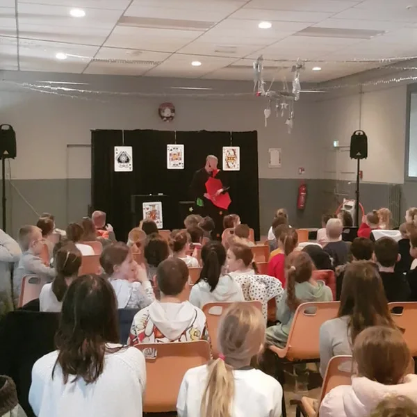
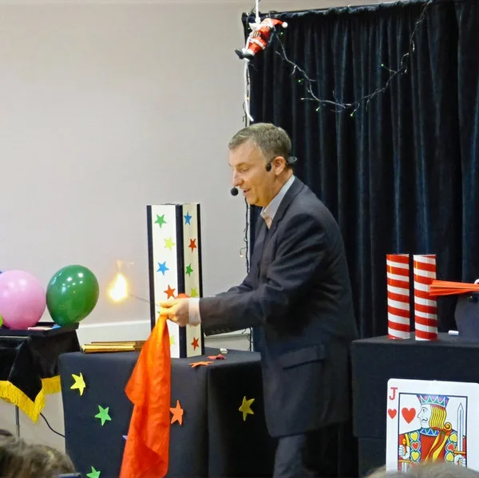
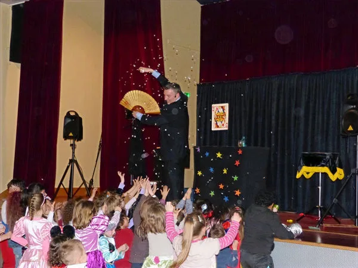

Comment se déroule un spectacle de magie pour enfants ?
Francis propose un spectacle d'environ une heure, avec un répertoire adapté à l'âge des enfants (de 3 à 12 ans) et surtout une participation très active du jeune public. De spectateurs, ils deviennent acteurs de la magie : ils montent sur scène, aident le magicien et vivent les tours de l'intérieur.
C'est un spectacle chaleureux et ludique, fait de rire, de rêve et d'émerveillement. Il peut être accompagné de sculpture sur ballons : chaque enfant repart alors avec sa création. Parfait pour les anniversaires, arbres de Noël, écoles, centres de loisirs et fêtes de famille.
Francis intervient à Issoudun, Châteauroux, Bourges, Vierzon et dans tout le Centre-Val de Loire. Il apporte sa propre sonorisation et s'adapte à tous les espaces : salle polyvalente, cour d'école, salon privé ou salle des fêtes.
Pour un anniversaire réussi : spectacle de magie + sculpture sur ballons. Chaque enfant repart avec sa création et ses souvenirs plein la tête.
Pour quelles occasions ?
- Anniversaires et fêtes d'enfants (3-12 ans)
- Arbres de Noël et comités d'entreprise
- Écoles, centres de loisirs et accueils périscolaires
- Fêtes de village et événements publics
- Spectacle interactif d'environ 1 heure, sonorisation incluse
Un spectacle interactif et adapté à chaque âge
Francis Darcy ne propose pas un spectacle figé, récité de la même façon à chaque représentation. Il adapte son répertoire, son rythme et sa pédagogie à l'âge des enfants présents. Pour les tout-petits de 3 à 5 ans, la magie est très visuelle et colorée : apparitions de foulards, peluches qui prennent vie, objets qui changent de couleur sous leurs yeux. Les tours sont courts et ponctués de comptines ou de mots magiques que les enfants répètent en chœur. Francis sait capter l'attention des plus jeunes sans jamais les brusquer.
Pour les 6-10 ans, le spectacle devient résolument participatif. Les enfants ne restent pas assis à regarder : ils montent sur scène, deviennent les assistants du magicien, tiennent la baguette magique, soufflent sur les cartes ou aident à faire disparaître des objets. C'est ce qui rend chaque représentation unique — les réactions spontanées des enfants font partie du spectacle. À Issoudun comme à Châteauroux ou Bourges, Francis a l'habitude de transformer une salle timide en un public déchaîné de rires et d'applaudissements en quelques minutes.
Pour les groupes mixtes ou les enfants à partir de 10 ans, Francis intègre des tours plus élaborés, avec une dose d'humour et de suspense qui captive aussi les adultes présents. Le spectacle dure environ une heure et peut être prolongé par un atelier de sculpture sur ballons, où chaque enfant repart avec sa propre création — épée, chien, fleur ou couronne. Cette formule complète est particulièrement appréciée pour les anniversaires à domicile, les arbres de Noël d'entreprise, les kermesses scolaires et les fêtes de village dans l'Indre et le Cher.
Pourquoi choisir un spectacle de magie pour enfants ?
Un spectacle de magie est bien plus qu'un divertissement. C'est une expérience qui nourrit l'imaginaire et marque les esprits durablement. Voici pourquoi les familles, les écoles et les comités de fêtes d'Issoudun, Châteauroux et Vierzon font appel à Francis :
- Développe l'imagination et le sens de l'émerveillement — les enfants découvrent que l'impossible peut devenir possible, ce qui stimule leur curiosité naturelle.
- Inclusif et universel — la magie fonctionne pour tous les âges, toutes les origines, sans barrière de langue. Les enfants en situation de handicap y trouvent aussi leur place.
- Aucune installation complexe — Francis apporte tout son matériel et sa sonorisation. Salon, cour d'école, salle des fêtes ou jardin : il s'adapte à votre espace, dans tout le Centre-Val de Loire.
- Des souvenirs durables — les enfants en parlent pendant des semaines. Les parents aussi. C'est un moment de partage intergénérationnel que l'on n'oublie pas.
- Une dimension éducative — observer, déduire, manipuler : la magie développe la logique, l'attention et la motricité fine, notamment lors des ateliers d'initiation.
- Le complément idéal à la sculpture sur ballons — combiner spectacle et atelier ballons permet de remplir un après-midi entier d'animation, sans écran ni ennui.
« Magicien qui a ravi les enfants du centre de loisirs : une matinée d'initiation et un spectacle l'après-midi. Pédagogue et professionnel. Au top ! Merci Francis. »
— Morgan Collin, avis Google
Questions fréquentes sur les spectacles enfants
À partir de quel âge les enfants apprécient-ils le spectacle ?
Le spectacle est adapté aux enfants à partir de 3 ans. Francis ajuste son répertoire et sa pédagogie en fonction de l'âge du groupe. Les enfants de 5 à 10 ans sont le public idéal : ils participent activement et en gardent un souvenir marquant.
Combien d'enfants peuvent assister au spectacle ?
Il n'y a pas de limite stricte. Francis a l'habitude d'animer devant des groupes de 10 à 80 enfants. Au-delà, le format peut être adapté avec une sonorisation renforcée. Pour un anniversaire privé, 8 à 20 enfants est la taille idéale.
Quel espace faut-il prévoir ?
Un espace d'environ 3 m × 2 m suffit pour le magicien, avec les enfants assis devant. Francis apporte sa sonorisation et s'adapte : salon, salle polyvalente, cour d'école ou salle des fêtes.
Francis peut-il animer un anniversaire à domicile ?
Oui, Francis se déplace directement chez vous avec tout son matériel. Salon, jardin, garage aménagé — il s'adapte à n'importe quel espace pour créer un moment inoubliable. Les formules anniversaire peuvent combiner spectacle de magie et sculpture sur ballons pour une animation complète. Francis intervient à Issoudun, Châteauroux, Bourges et dans toutes les communes environnantes de l'Indre et du Cher.
En images



Autres prestations
Envie de magie pour votre événement ?
Parlez-en à Francis : il vous répond personnellement et établit un devis gratuit sous 24 heures.
Issoudun · Indre · Centre-Val de Loire